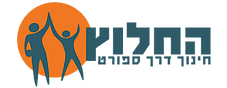
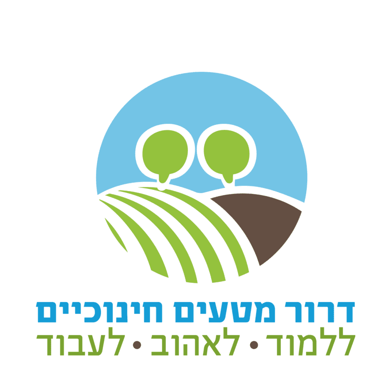
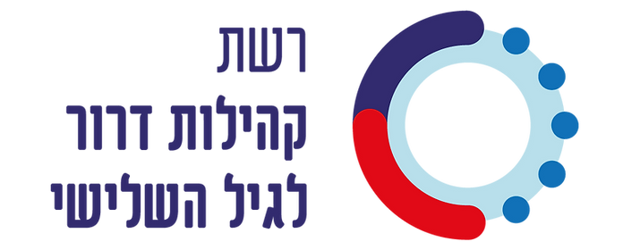
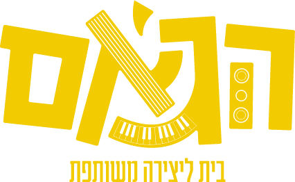
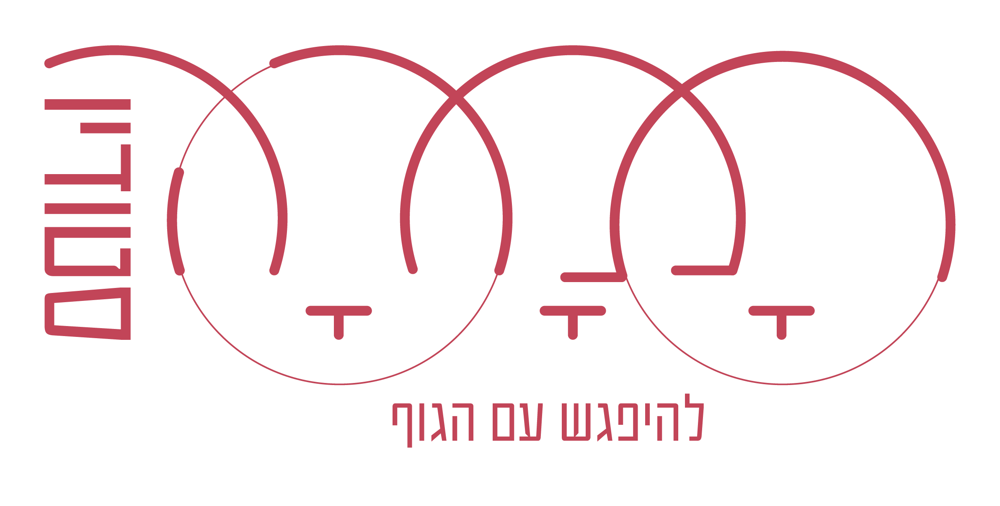

פרויקטים חינוכיים, קהילתיים ותרבותיים — לפעוטות, ילדים, בני נוער, צעירים, מבוגרים וזקנים, בדגש על הפריפריה הגיאוגרפית והחברתית.
תרמו היוםעמותת יסודות לצמיחה דרור מקימה ומפעילה פרויקטים חינוכיים, קהילתיים ותרבותיים לפעוטות, ילדים, בני נוער, צעירים, מבוגרים וזקנים בכל רחבי הארץ, בדגש על הפריפריה הגיאוגרפית והחברתית.
הפרויקטים מופעלים ומודרכים על ידי חברי וחברות קיבוצי המחנכים, הפרושים בכל רחבי הארץ.
פיתוח תוכניות חינוכיות, הכשרת צוותי חינוך וליווי מערכות חינוך ברחבי הארץ.

חינוך דרך ספורט לילדים ולבני נוער, בעשרות רשויות ברחבי הארץ מאז 2010.

פעילות חינוכית-חקלאית בקיבוץ רביד, ללמוד לאהוב לעבוד.

קבוצות חברתיות לבני ולבנות הגיל השלישי, לקידום הזדקנות מיטבית.

מוסד תרבותי בלב עכו העתיקה, פועל מאז 2009.

סטודיו תנועה ויוגה ברחובות, הוקם ע"י חברי תנועת דרור ישראל.